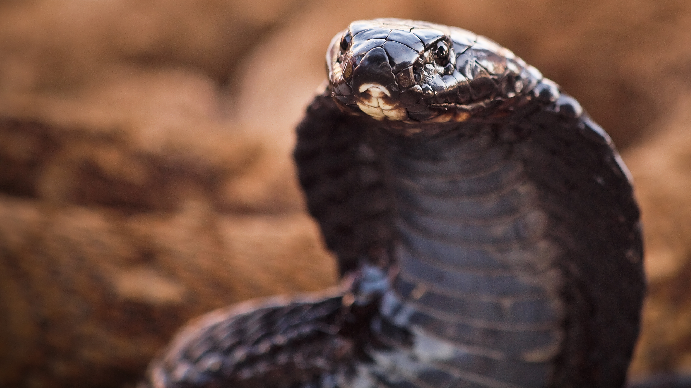

Inicio
Las Serpientes:

Cobra Negra Escupidora
Se trata de una especie de serpiente venenosa y de comportamiento agresivo. Suele medir entre 1,20 y 2,20 metros y se alimenta de sapos, ranas, serpientes, peces y pequeños mamíferos, aunque en numerosas ocasiones ella también es presa de otros depredadores como el pájaro secretario o la mangosta.
Mas informacion: Naja nigricollis